|
Chapter 7: Class Relationships |
Inheritance is a core concept of the object-oriented paradigm, emerging in two basic contexts, abstraction and reuse.
First, one may recognize that two constructs A and B have something in common. To avoid having to deal twice with this shared aspect, one may create a construct C that captures the commonality, remove this commonality from A and B and restore it in A and B by letting them inherit from C. Consider Apples, Pears, and Oranges. It may pay off to introduce the notion of Fruit and factor out in Fruit the commonalities of apples, pears, and oranges. Similarly, it may pay off to introduce the class Account to capture the commonalities in CheckingAccount, SavingsAccount, BusinessAccount, etc. Hierarchical abstraction of common features contributes to the overall human understanding of the objects and classes comprising a system.
A second reason for using inheritance can arise during model construction. During the construction of, say, class D, one may recognize that a desired feature of D has been developed already and is available in, say, class E. Instead of reconstructing this feature, one establishes a directed inheritance link between D and E. The more specialized class D reuses all features of E. In the programming realm, this is sometimes known as ``programming by differences''.
The notions subject to inheritance in an analysis, a design, and an implementation are respectively properties, computation, and code. Since classes are not described through code in the analysis phase, we have a more abstract notion of inheritance than seen in OO programming, property inheritance. Properties consist of declarative class features and associated constraints. (We consider only explicit features and constraints ruling out features, values, etc.) Property inheritance is in fact the foundation for inheritance at the design and implementation level (see Chapter 16).
Property inheritance is a relation between a subclass and a
superclass
All classes may be considered to be subclasses of a common base. We consider class Any to describe any object. It thus serves as the root of any inheritance hierarchy. The class defines no attributes or transitions. Any is an example of a class that is not directly (deterministically) instantiable. No object is a member only of class Any, but instead of one of its subclasses (or their subclasses, or ...). Non-instantiable classes are common results of superclass abstraction.
One can simply declare that a class is a subclass of another, for example that class CheckingAccount is a subclass of the class Account. It is, of course, much more defensible to provide a reasoned justification of why the class is a subclass of the other. In general, inheritance is justifiable when the subclass description imposes additional features and/or constraints without invalidating any properties described in the superclass.
We will give a set of more precise justifications, along with examples. In this section we focus on the definition of a subclass Q with a single superclass P. We will later broaden this to include multiple inheritance. This list of justifications is not exhaustive. Computational justifications will be introduced in Part II (especially Chapter 16).
It is certainly possible to define subclasses justified by more than one application of these cases. It is another matter whether bundling multiple cases into one inheritance relationship is a wise conceptualization. A good rule of thumb is to proceed step-by-step, while at the same time limiting construction to subclasses that have a ``natural'' interpretation.
Q adds an attribute to those that it has obtained from P. As an example, a Room has the subclass Bathroom with the attribute bath of domain Bathtub:
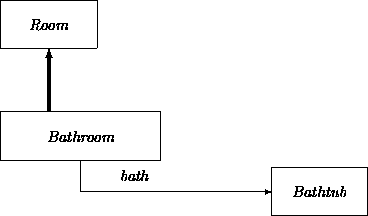
As illustrated here, our graphical notation of the superclass-subclass inheritance relation is an arc directed to the superclass.
For another example, consider a bank to be a family of branches where the headquarters is considered to be a special branch. This suggests defining the class Headquarters as a subclass of Branch. We can distinguish these two classes by giving Headquarters an additional attribute president with domain Employee:
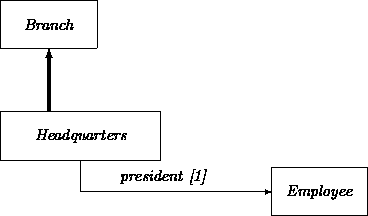
A variation on this justification is for Q to require that additional elements be contained in a SET or other collection attribute defined for P, assuming that P does not possess any constraints (e.g., collection size bounds) that preclude this.
A subclass Q inherits everything in parent class P, including its transition network. In the simplest case, the transition network for Q is the same as the transition network for P. This provides transitions ``for free'' in the subclass. However, it is possible that the transition network of Q contains additions to P's transition network.
A subclass may contain additional attributes that in turn generate new states and transitions. For example, a savings account may have an attribute that describes the interest rate. As a result, the behavioral description may have an additional transition that accounts for interest debits. Other examples include:
Subclass Q may differ from P because Q carries an additional constraint on the attributes of P. For example, let P be the class of Customers, and Q the class of GoldenCustomers ( GC) with the feature that they have been customers for at least ten years.
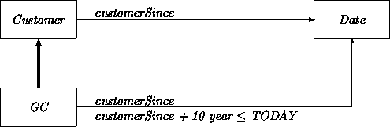
A special case of additional constraint is a narrowed multiplicity feature. For example, let P be the class of Airplanes with the multivalued attribute engine having multiplicity feature [0:M] stating that a plane has zero or more engines. Now let Q be the class of gliders where we narrow down the multiplicity feature of engine to [0]:
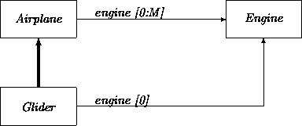
As another example, consider the class of bikes that can have as instances unicycles, bicycles, and tricycles:
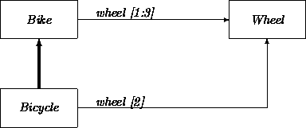
Assume that P has an attribute with the class PR as a value domain. Subclass Q differs from P because it has for this attribute the value domain QR instead of the value domain PR, where QR is a subclass of PR. Thus, we see that the subclass notion has a recursive component.
As an example, let P be the class Person having the attribute countryOfBirth where the value domain PR is equal to Country. Let Q be the class European. We choose EuropeanCountry as the corresponding value domain QR. Indeed, with this choice QR is a subclass of PR and thus Q is a subclass of P:
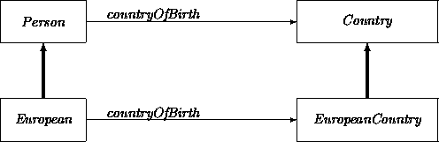
Subclass attributes may be narrowed down to fixed values. To extend the previous case, instead of being restricted to a subclass of PR, Q's attribute may be fixed to a certain value of PR, say, qr.
Elaborating the previous example, Canadian becomes a subclass of Person by fixing the value domain of countryOfBirth to the instance Canada of the class Country.
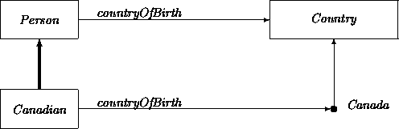
Similarly, we can obtain the subclass Albino out of Mammal by fixing a color attribute in Mammal to white:
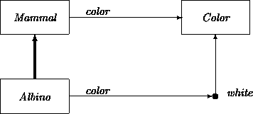
The definition of property inheritance states that any property true of all instances of superclass P must be true of all instances of subclass Q. The same remarks thus hold for each transition individually. As with static properties, refined transitions may impose additional constraints as long as they do not conflict with those of their bases. In particular:
Most considerations governing guard, action, and event refinement impact subclassing mechanics with respect to the interfaces and signatures employed at the design level (Chapter 21) where different subclasses describe different ways of representing and computing properties.
A subclass may have two or more superclasses, inheriting all properties and constraints from each. For example, we may introduce an account that combines the features of a checking account and a savings account, a so-called BahamaAccount:
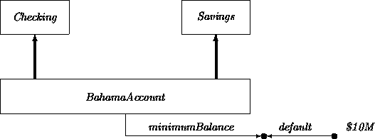
Careless use of multiple inheritance can result in the introduction of frivolous subclasses that do not describe any possible instance. For example, one may define a meaningless subclass that inherits from, say, both Account and Mammal. Such constructions may be avoided by demanding that every defined class be illustrated with at least one prototypical instance.
In multiple inheritance, equal attributes from multiple sources are projected into a single occurrence. This is one reason that different concepts and roles should not be associated with the same name in OO models. For example, consider the class of employees who are also clients:
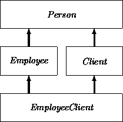
Multiple inheritance may lead to ambiguity when a subclass inherits a feature that has two or more different interpretations in the different superclasses. For example, suppose that both the class Employee and the class Client introduce an attribute address. Assume that the value domain for address in Employee is, say, LongAddress (supporting an extended zip code), while the value domain for address in Client is ShortAddress. What is the domain for address in EmployeeClient?
It is the responsibility of the analyst (and/or a support tool) to avoid or repair these ambiguities. Here, one solution is to redefine the class Client by making it a subclass of the class ClientNA, which is like the original Client class but does not have the address attribute. The ShortAddress attribute may then be added to Client. Class EmployeeClient avoids the address ambiguity by inheriting from both Employee and ClientNA. Letting LA stand for LongAddress and SA for ShortAddress, we obtain:
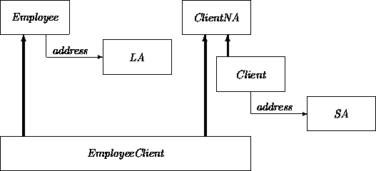
Alternatively, the ancestor class Person could be subdivided in an analogous fashion. For example, subclass PersonWithLongAddress could be made the common superclass of EmployeeLA and ClientLA. Pushing the distinction up one level has the advantage of addressing similar ambiguities that may arise in any additional Person subclasses that are introduced. An even better strategy is to use only one form of Address, if this is possible.
The relationship among the n sibling subclasses Q1, Q2, ... Qn of superclass P may be stronger than indicated by the mere fact that they are all subclasses of the same superclass. We discuss three special cases, exclusion, covering, and partitioning.
For example, clients may be divided into two definitionally
exclusive categories:
P = the class of clients
Q1 = those clients that are also employees
Q2 = those clients that are not employees.
For another example, assume that different account subclasses have been
characterized in terms of attributes and/or constraints such that they
are, in principle, mutually exclusive:
Account = BankAccount + ClientAccount
ClientAccount = Personal + Joint + Business
A ``+'' is conventionally used in textual listings of disjoint
classes. We also denote this graphically as follows:
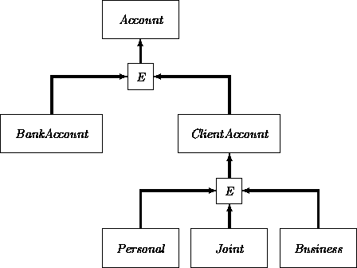
The subclasses in a family of subclasses Q1, Q2, ..., Qn of P bearing an exclusion property are connected in an indirect way to the superclass P. Their family membership is expressed by connecting them first to an intermediate box which is in turn is attached to the superclass. This notation is also used for covering and partitioning. To discriminate among them, we put an E, C, or P in the little intermediate box.
A set of subclasses Q1, Q2, ..., Qn of P may be defined such that any instance of P must belong to at least one of the listed subclasses. As in the previous case, this property applies to any actual collection of instances of P.
An ill-defined example is a classification of humans into children, adults and elderly. This yields overlap because the boundary between children and adults is fuzzily defined and a particular person can be considered to belong to more than one class.
As a precise example, consider a classification of bank clients in three
overlapping categories, where the ambiguity of a client qualifying for
more than one category is to be resolved at the discretion of a branch
manager:
P = the class of clients
Q1 = regular clients with balances less than $1M
Q2 = golden clients with balances over $0.8M but less than $1B
Q3 = platinum clients with balances over $0.8B.
When a set of subclasses Q1, Q2, ..., Qn of P satisfy the exclusion property and the covering property, we have a partitioning of P.
We have encountered a partitioning already in the example:
P = the class of clients
Q1 = those clients that are also employees
Q2 = those clients that are not employees.
Every client is either an employee or not, thus we have the covering property. We agreed already on the exclusion property.
As another example, consider the classification of people according to
which region of the world in which they reside: Africa, America,
Antarctica, Asia, Australia, Europe, Oceania. These categories cover
the world and exclude each other. A sometimes-useful technique for
transforming an exclusion into a partitioning is to define an
``other'' class that describes all features not possessed in the
exclusive classes otherwise defined. This ``other'' class may later
be expanded into subclasses. For example, people of the world could be
partitioned simply as:
Citizen = American + NonAmerican
Later, if necessary, the NonAmerican class could
itself be partitioned:
NonAmerican = European + African + ...
In turn, each of these
may be subject to further refinement, for example:
European = British + Continental.
Partitioning sibling classes often makes them easier to reason about. All possible instance classifications are accounted for. Partitioning properties (when they can be ascertained) also have ramifications for design and subsequent implementation. For example, they sometimes simplify the construction of conditional expressions. When we know about or have estimates of the relative sizes of a partitioning, we should register these insights as well.
If some instances may belong to the superclass only, and not of any particular subclass, then these measures do not partition all instances into exactly one of the subclasses. For example, people whose citizenship may change can be described only as Citizen, not one of its subclasses. When variability on such a dimension is the norm, the entire subclass structure is usually best employed to describe partitioned attributes of instances of other classes, not as the main classification hierarchy.
A class may bear more than one family of exclusions, coverings and/or
partitionings. These sets are independent (or
orthogonal) when the intersection of any tuple of subclasses taken
from the different characterizations is nonempty. As an example, consider the
following sets of properties describing Humans:
Nationality = American + NonAmerican
Gender = Female + Male
Height = Short (< 1.6m) + Medium + Tall (> 1.8m).
All crossings are permitted. For example, the intersection of
Americans, females, and people of height less than 1.6m leads to a
meaningful class.
Assuming that each of these have been described as subclass structures, there are two variant techniques for using them to derive new subclasses, attribute narrowing and mixin1 inheritance. In the first, properties are listed as attributes of a base class, and narrowed in subclasses. The superclass may list unconstrained domains, and the subclass constrained ones:
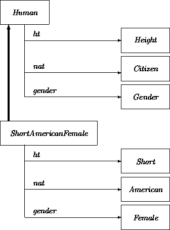
1Footnote:Using mixin inheritance, classes representing completely independent properties are ``mixed together'' via multiple inheritance in the target class. The superclasses used in mixin inheritance are often totally useless, and even unnatural by themselves, but readily combine with others to form meaningful classes. For example:
The term ``mixin'' has grown to be used so commonly in a particular technical sense to have lost its hyphen. This also true of a few other terms, including ``callback''
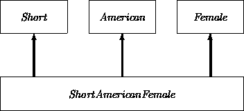
The previous example illustrated two different strategies for relating partitioned attribute structures through inheritance. While similar, these are not always equivalent in effect. For example, consider a MailingLabel class with a set of attributes containing no explicit codependency constraints:
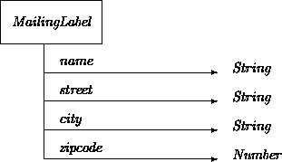
While unstated, there are some implicit constraints among the attributes, especially the fact that together they describe an actual postal address. However, these constraints are not even specifiable without recourse to a model of the entire postal system, and thus, probably, of the entire planet.
There are many ways in which these properties could have been factored into classes. One extreme is to create a class for each attribute and then to use multiple inheritance to bind them together:
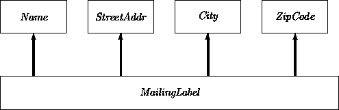
This class structure suggests that the different aspects of a MailingLabel may be viewed ``in isolation''. But this is not necessarily true, especially if each of the mixed-in classes contains a transition that changes the value of the single attribute it maintains. Changing, say, the city surely requires changes in the zipcode. When properties are truly orthogonal, multiple inheritance is a good way of describing property combinations. But the implicit constraints that the parts together form a legal address indicate otherwise here (and in nearly all similar situations). Most often, interdependencies are much more explicit than in this example, thus arguing immediately against multiple inheritance.
Here, an intermediate factoring is more attractive. By isolating the address properties in an Address class, we can still structurally reflect the cohesion of the address attributes. The MailingLabel class then connects the address to a name. By doing this, we will have created an Address class that seems generally useful beyond what is needed for mailing label purposes.
Construction of an Address class is, of course, a pretty obvious maneuver. But once we have broken out Address, we can think about extending and refactoring this new class. For example, it seems like a bad idea to use a zip code attribute, since this only applies to addresses in the United States. It seems safe to say that all addresses, world wide, need street and city properties (or surrogates such as post office boxes, which are OK since these are just uninterpreted string attributes). But different countries have different postal codes and/or other information required on mailing labels. This could be captured through standard subclassing mechanics.
As illustrated in the previous example, inheritance may be used to help elicit and flesh out tacit dependencies among attributes. Attempts to factor classes into hierarchies may also reveal attributes that were not originally listed in classes, but only implicitly assumed.
For example, an Employee class might be defined as a subclass of Person, with additional attributes such as salary. But there may be other properties that distinguish employees from people in general that nobody bothered to list. Assuming that this class is used in our banking application, an obvious one is the predicate worksForAB, which is true for employees but not others, and similarly for isEmployed, mayParkInEmployeeLot, and perhaps many others.
It is sometimes difficult to avoid implicit distinctions during initial class definition. There may be innumerable ways in which objects of conceptually defined subclasses differ from those of their superclasses. These are only made explicit when analysts notice their importance in a given model or hierarchy. Leaving them implicit can be a source of error. Of course, the best solution is to add appropriate attributes. For example:
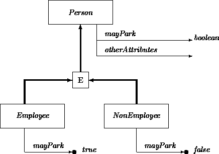
A simple and useful device for organizing attempts to factor and partition classes forms the heart of the Demeter tool system [3]. Classes and properties may be viewed in a notation similar to that used for describing formal grammars. In the Demeter notation, any class may have only properties (written using ``='') or may be a superclass of any of a number of alternative subclasses (written as ``: ... | ...'').
For example, suppose we started dissecting our MailingLabel class as:
MailingLabel = Name Address
Address: USAddress | CanadianAddress
USAddress = Street City ZipCode
CanadianAddress = Street City CanadianPostalCode
After looking at things in this way, we might decide to transform it
into:
MailingLabel = Name Address
Address = Street City PostalCode
PostalCode: ZipCode | CanadianPostalCode
The Demeter system itself incorporates a number of other constructs and notations. Various partitioning criteria and transformation algorithms may be applied to such representations. For example, it is a good idea to push attributes as far upwards in a hierarchy as they can go without breaking any interdependency constraints. Even without tools, this grammatical technique can be a valuable aid.
In Chapter 4 we described sets as extensionally defined analogs of classes. Analogs of set operations may be applied to existing classes to derive new candidate classes:
Class intersection () has been encountered before. It corresponds to multiple inheritance. Class summation () is similar to abstraction into common superclasses, and subtraction (\) is similar to specialization via partitioning.
However, the subclass relations described earlier are based on properties of instances while these set operations focus on the families of instances themselves. While they may be used directly, set expressions are often better viewed as invitations to recast the resulting classes in terms of properties and then apply the resulting mechanics.
Moreover, these operations must be applied carefully to avoid the definition of meaningless classes. For instance, the class RectangularAccount is obtained by intersecting Rectangle and Account. Similarly, EvenNumber and NonEvenNumber surely yield an empty intersection because they form a partitioning of numbers. Raven and Albino are also not recommended for intersection. Subtracting Adult from Human is fine. The reverse subtraction is troublesome.
Inheritance may also be used to abstract and refine relations. Justifications for how a relation S can become a specialization of a relation R are similar to those for classes. The most common forms follow.
Relation S differs from R because the domains of S are subject to an additional constraint. For example, consider the relation between ATMs and branches with respect to where the ATMs are located. Some (perhaps most) of the ATMs reside at the same location of a particular branch. Others are in malls, airports, etc. The relationship ATMAssociatedWithBranch ( As) is uncommitted about the location of an ATM. The refined relation ATMAttachedToBranch ( At) holds only for attached ATMs:
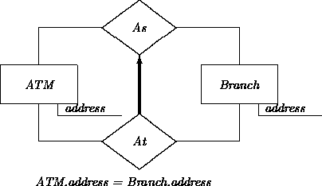
A relation may be specialized by narrowing down one or more of its domains. For example, consider the subrelation of fraudulent account ownership. Letting Crim stand for CriminalClient, LAcc for LaundryAccount, and FrOwn for FraudulentOwn:
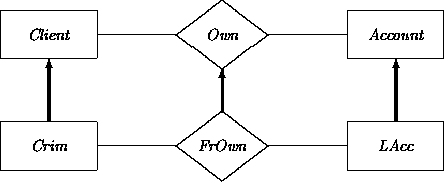
Similarly, a Transfer relationship between accounts may be specialized to an InterestTransfer between BankAccount and Savings. Letting Trans stand for Transfer, BA for BankAccount, and ITrans for InterestTransfer:
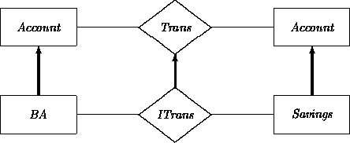
A narrowed domain may also result from multiple inheritance. For example, If we have been convinced that we can safely create EmployeeClient, we can use this class to refine an Own relationship into an Own* subrelationship, as in:
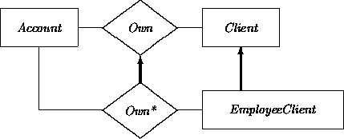
A more classic example of domain narrowing is the ternary relation
R(i, j, k) among the integers i, j, and k corresponding to
addition:
i + j = k
and the ternary relation S(e, f, g) among the even integers
e, f, and g also with:
e + f = g.
Fixing a domain of S to a specific value in the corresponding domain
of R effectively means that the arity of the relation S is less
than the arity of R. For example, consider again the ternary relationship
R(i, j, k) among the integers i, j, and k corresponding to:
i + j = k,
A refined relation S(i, k) can describe
successors by fixing j = 1:
i + 1 = k.
This may be viewed as a projection of the ternary relation R to the
special binary relation S:
Redundancies among classes can be factored out using (multiple) inheritance. Inheritance lays the foundation for abstraction as well as for a powerful version of reuse. Inheritance may also induce relationships among sibling classes, including exclusion, covering, and partitioning. Another approach to deriving classes focuses on set operations. A second use of inheritance refines relationships in order to achieve similar abstraction and redundancy reductions.
Representative approaches to OO inheritance and subclassing are described in the books edited by Lenzerini et al [2] and Shriver and Wegner [6]. A somewhat more formal framework for enumerating subclass justifications may be found in [1]. Opdyke [4] discusses other pragmatic issues in the factoring of classes.
We have been careful in this chapter to stay away from code inheritance in order to deal first with property inheritance, the foundation of what some others call subtyping. Some analysis methods are less conservative. As an example, we quote from Wirfs-Brock et al [7]:
Inheritance is the ability of one class to define the behavior and data structure of its instances as a superset of the definition of another class or classes. ... Inheritance also allows us to reuse code; the wheel need not be reinvented every time.